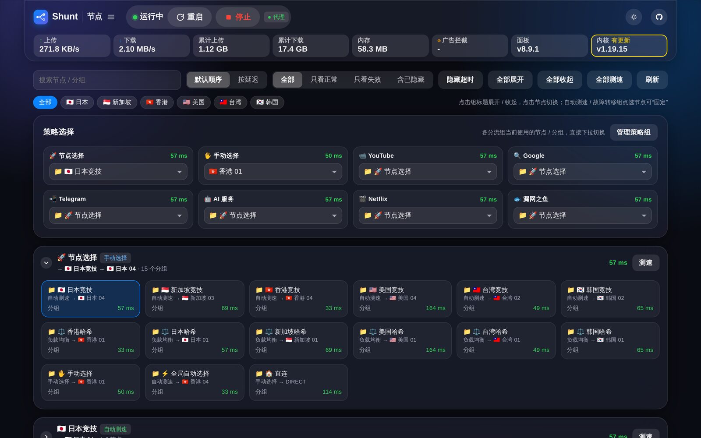
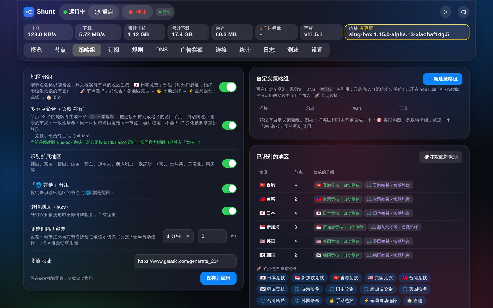
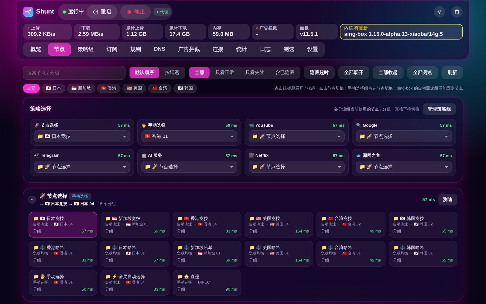

Shunt 分流
Alpine 旁路由一键透明代理 + Web 管理面板，支持 mihomo / sing-box 双内核
面板 v9.1.1
mihomo v1.19.34
sing-box 1.14.4
许可 GPL-3.0
是什么
Shunt 跑在 Alpine 旁路由上，用 TProxy 做透明代理：家里所有设备不用逐个配置代理，流量自动走面板分流。面板负责节点、订阅、策略组、内核启停和状态监控，打开浏览器就能管。
双内核可以随时切换：mihomo 和 sing-box 各有规则集和 DNS 配置，切换后自动生成对应配置、重启内核。
功能
📡 订阅管理
Clash / Mihomo YAML 或 Base64 节点链接，多个订阅分别管理，支持过滤规则。
🎯 策略组
竞技组、负载均衡组、哈希组，按延迟和连接数自动挑节点，分流规则可视化编辑。
💓 节点健康检查
定时自动测速，挂掉的节点标红，连续多天不可用的自动隐藏。
🕸️ 负载均衡拓扑
概览页实时拓扑：轮询 / 哈希组到成员节点的连线，粗细是连接数，显示延迟与下载速度。
💾 备份恢复
每次在线更新前自动备份当前版本，设置页一键恢复，保留最近 10 个版本。
🔔 Telegram 通知
节点异常、订阅更新失败等情况推送到 Telegram。
🚫 广告拦截与 DNS
内置广告拦截、Fake-IP 与 DNS 分流设置，防 DNS 泄露。
📱 主题与手机端
多套主题，手机浏览器自适应，IP 信息可隐藏 IP 但保留归属地。
截图





安装
一键安装（设备能联网）
在 Alpine Linux 上用 root 执行，装完打开 http://旁路由IP:8080：
# 国内网络
wget -qO- https://ghfast.top/https://raw.githubusercontent.com/Skycnhe/Shunt-release/shunt/install.sh | sh -s -- --cn
# 国外网络
wget -qO- https://raw.githubusercontent.com/Skycnhe/Shunt-release/shunt/install.sh | sh离线安装（设备不联网）
从 Releases · offline 下载对应架构的离线包，传到设备后：
tar xzf shunt-offline-*.tar.gz && sh shunt-offline/install.sh也可以先在联网设备上跑离线安装脚本：
# 国内网络
wget -qO- https://ghfast.top/https://raw.githubusercontent.com/Skycnhe/Shunt-release/shunt/offline.sh | sh -s -- --cn
# 国外网络
wget -qO- https://raw.githubusercontent.com/Skycnhe/Shunt-release/shunt/offline.sh | shDocker 安装
Linux 宿主机，host 网络：
docker run -d --name shunt --restart unless-stopped --network host \
--cap-add NET_ADMIN --cap-add NET_RAW --device /dev/net/tun \
-v shunt-data:/data -e TZ=Asia/Shanghai --stop-timeout 30 \
skycn2022/shunt:latest本版更新 · v9.1.1
- 概览新增「🕸️ 当前负载均衡」小拓扑，IP 信息加「出口节点」；版面压紧，实时流量图变矮。
- 修复 sing-box 测速间隔设到 30 分钟以上时启动即退出的问题。
- 修复 sing-box 节点延迟比 mihomo 高 2–4 倍的问题：支持 urltest_unified_delay 的内核自动开启，测速数值与 mihomo 一致。
- 「哈希」组提示：不同主域名可能分到不同节点，登录敏感的服务建议用竞技组。
完整记录见仓库 CHANGELOG.md。